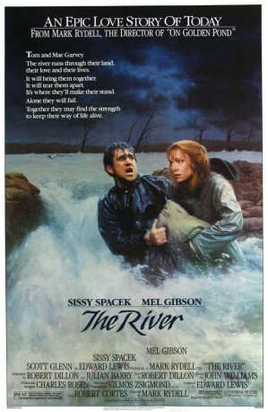

#9177 Menschen am Fluß
Alternativ: The River
Auszeichnungen: 1 Oscars gewonnen für 4 Oscars nominiert
 
 IMDB-Wertung: 6.3 / 10
IMDB-Wertung: 6.3 / 10  Metascore: 0
Metascore: 0 
Tom and Mae Garvey are a hard working farming couple living with their two children on the east Tennessee farm owned by Tom's family for generations. They and many of their neighbors have hit hard times of late. A downturn in the economy has led to dwindling land prices. But the biggest problem of late has been that their crop land has been prone to flooding as the property is adjacent to a river. Manipulating the powers that be including a local senator and the local bank, Joe Wade, who also grew up in the area and now runs the local milling company that sets the local grain prices, is working behind the scenes to buy up the properties along the river for a song as he wants to build a dam which would flood the Garvey's and others riverfront properties. The dam would generate electricity, but more importantly for Joe it would provide irrigation opportunities for farm properties away from the river, such as his own. Tom already intensely dislikes Joe as he and Mae used to go together. ...
Jahr: 1984
Dauer: 123 Minuten
FSK: 12
Land: USA Studio: Universal PicturesTonspuren:
Untertitel:
Auflösung: 1080p (1920x1040) Größe: 8949 MB
Genre: Drama
Regisseur: Mark Rydell
Drehbuch: Robert Dillon
Soundtrack: John Williams
Darsteller:
 Mel Gibson als Tom Garvey
Mel Gibson als Tom Garvey Sissy Spacek als Mae Garvey
Sissy Spacek als Mae Garvey Scott Glenn als Joe Wade
Scott Glenn als Joe Wade Don Hood als Senator Neiswinder
Don Hood als Senator Neiswinder Billy Green Bush als Harve Stanley
Billy Green Bush als Harve Stanley James Tolkan als Howard Simpson
James Tolkan als Howard Simpson Andy Stahl als Dave Birkin
Andy Stahl als Dave Birkin Jim Antonio als Dan Gaumer
Jim Antonio als Dan Gaumer- Samuel Scott Osborne als Billy Gaumer
- Amy Rydell als Betty Gaumer
 Barry Primus als Roy
Barry Primus als Roy- Mark Erickson als Baines
- Jack Starrett als Swick
 Charles Robinson als Truck
Charles Robinson als Truck- Shane Bailey als Lewis Garvey
- Becky Jo Lynch als Beth Garvey
- Bob W. Douglas als Hal Richardson
- Lisa Sloan als Judy Birkin
- Larry D. Ferrell als Rod Tessley
- Susie Toomey als Sally Tessley
- Kelly Toomey als Lisa Tessley
 Frank Hoyt Taylor als Zemke
Frank Hoyt Taylor als Zemke- Ivan Green als Smoot
- Desmond Couch als Wilderfoot
- Charles G. Riddle als Youngdall
- David Hart als Harley
- Dean Whitworth als Doctor
- Chuck Hanson als Fat Man
- Ira M. Quillen II als TV Weatherman
- Matt Bearson als First Employee
- Timothy Shadden als Second Employee
- Elizabeth Lane als Secretary
- Gary Gershaw als Drifter
Datei: X:\1984\Menschen am Fluß (1984, FSK12, 1920x1040).mkv seit 19.07.2018
Festplatte: HD 1980-1986
 Es gibt insgesamt 46 Filme in der Gruppe '1984'
Es gibt insgesamt 46 Filme in der Gruppe '1984'